Alienato è l'individuo che ha perduto il controllo della propria identità risultando estraneo a sé stesso o alla realtà
click per continuare
Nel XIX secolo gli alienati venivano rinchiusi in strutture sanitarie riabilitative: i frenocomi. O comunemente noti come "manicomi"
IL TIPOCOMIODEI CARATTERI ALIENATI
ENTRANDO NEL TIPOCOMIO...
Muoviti lungo il percorso

Guardati intorno
FOLLIA CIRCOLARE
click sui fogli per analizzare